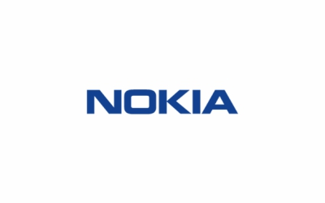

Production
Manufacturing is the focus of the pharmaceutics discipline


Get In Touch
Share a few details and our admissions counsellors will walk you through eligibility, fees, scholarships and the application timeline — no obligation.
Fill this in and we'll reach out shortly.
Overview
The M.Pharm programme is of 2 Years (4 semesters) duration including thesis research work. In depth knowledge of pharmacy is provided in the M.Pharm programme. After completing an undergraduate degree in pharmacy, graduates can enrol in a post-graduate programme called Master of Pharmaceutical Sciences (M.Pharm.). Faculty of Pharmaceutical Sciences, PES University, offers three M.Pharm specializations. Master of Pharmacy programme deals with analysing, testing, data interpreting, and researching of drugs for the treatment of the diseases of humankind. An increased requirement for a number of quality professionals in the pharmaceutical industry makes this high programme one of the most sought-after programme in the pharmaceutical field.
Pharmaceutics - This field is related to production of medicines and technology that is used in production of drugs used in pharmaceutical companies. Master of Pharmacy degree in pharmaceutics has scope in the formulations of drugs, research in formulations and excipients, manufacturing, drug regulatory affairs.
Pharmacology - You have good scope in all working fields after M. Pharm in Pharmacology from clinical hospitals to pharmaceutical companies. You can work in Pharma market research companies, patents or clinical trials, consultancy in Pharmacy, Drug research, drug regulatory affairs and Pharmacovigilance. Consultancy and Research based jobs are more gratifying.
Pharmaceutical analysis - The pharmaceutical analysis is a branch of chemistry, which involves the series of process for the identification, determination, quantitation, and purification various organic, inorganic and biological substances. The subject also deals with the separation of the components from the mixture and for the determination of the structure of the compounds.


10+2+B.Pharm from a recognized board.
About the Programme



Is It For You?
A master’s degree in pharmaceutical science is ideal for students who are interested in the use and delivery of therapeutics. The curriculum is designed to cultivate the skills necessary to better understand how drug performance is affected by the chemical and physical properties of therapeutics.
- Include drug discovery, formulations research, clinical research and bio-safety studies etc
- Quality assurance; quality control of the drug and adherence to guidelines is mandatory for industry.
- prepare dossiers for exporting drugs into foreign countries.
- There are other emerging scopes like Consultancy, Market research, clinical trials, pharmacovigilance
- Good scope in government sector universities as well as in private pharmacy colleges.
Placements
The University's Placement Cell will aid in placing graduating students in the business world, educational institutions, healthcare industry in addition to offering funding and business ideas to aspiring entrepreneurs through the PESU Venture Labs.
Core Subjects
About the Programme
Learning Approach
The program is proposed as an in-depth 2-year programme comprising 4 semesters in total. The minimum credit points required for the award of M.Pharm degree is 95 and maximum is 100. However, based on the credit points earned by the students under the head of co-curricular activities, a student shall earn a maximum of 100 credit points. These credits are divided into Theory courses, Practical, Seminars, Assignments, Research work, Discussions with the supervisor, Journal club, and Co-Curricular activities over the duration of four semesters.
Beyond the Classroom
- The Indian traditional dance and music club. The Indian traditional dance and music club aims to highlight the talent of dance and creativity among students. It provides opportunities to dance lovers to prove their talent and it is a good platform for them to have their artistic exploration.
- The collegiate social responsibility club.
- The drama club. The drama club established to promote the creativity and innovation in students through the art of drama and develop poise and self-confidence and appreciate dramatic literature and its techniques.
- The photography club. The photography club is a platform to bring together students and share knowledge about the art and science of Photography. The club organizes activities that give a chance to learn photography, utilize their camera to the fullest and become sensitized to the world around.
- The western dance club. and more…
Careers
Manufacturing is the focus of the pharmaceutics discipline
Quality control and analysis are undeniably crucial to a pharmaceutical organisation. This function comprises testing and rechecking the medications' quality as well as confirming that partially or fully created items adhere to the standards and regulations set forth by the nation's pharmaceutical council
Regulatory affairs entail the compilation of dossiers for international drug export
One of the most important jobs in the pharmaceutical sector is clinical research. Drugs and vaccines must go through a number of clinical studies before being made available on the market. It involves assessing new drugs to evaluate how they impact the target population
Drug discovery and drug design are two aspects of pharmaceutical research and development.
Teaching is best pursued after obtaining a doctorate (PhD). Numerous universities offer assistant professorships to M.Pharm graduates.
Other jobs include:
Financial Support
Over ₹140 crores in merit scholarships have been given to PES University students since 2014.
Merit Scholarships
Awarded on CGPA / SGPAMerit Certificate + 50% Tuition Fee Refund for Top 5% of the Students based on their CGPA.
Merit Certificate + 40% Tuition Fee Refund for the next 20% of the Students based on their SGPA.
Merit Certificate for Students securing 7.75+ SGPA.
PES Loyalty Program
Awarded on family / institutional ties, every year of studyChildren of full-time staff, 5+ years employment.
Graduates of any PES institution or sister concern.
Siblings of currently enrolled PES students.
Siblings and children of PES University alumni.
University Highlights
The accreditations and rankings behind PES University as a whole.
Among new universities under 5 years, ranked by KSURF.
PES University holds NAAC's top-grade accreditation nationally.
Times of India B-School Rankings, 2021.
Second only to IIM Bangalore among B-School aspirants, per Times of India.